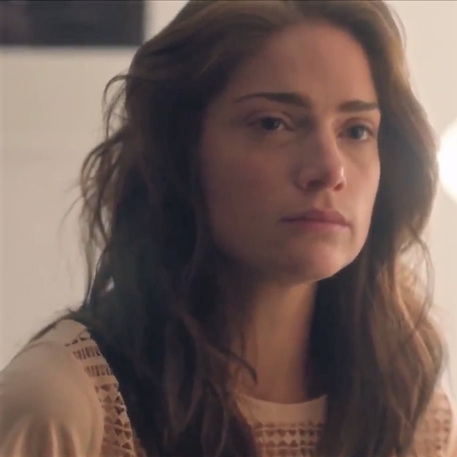

#ONatalMaisSombrioQueVocêPodeImaginar
Em uma cabana remota no Natal, Matt (Jon Hamm) e Joe (Rafe Spall) compartilham três histórias interligadas.
A primeira, de Matt, envolve um grupo de dark web que assiste a seduções via "Z-Eyes" (implantes oculares), culminando em um assassinato-suicídio.
A segunda, também de Matt, descreve o treinamento de "cookies" — clones digitais de pessoas — para serem assistentes pessoais, com uma cookie sendo torturada pela manipulação do tempo.
A terceira, de Joe, revela que ele foi "bloqueado" por sua esposa Beth após uma discussão sobre aborto, tornando-a uma silhueta cinza. Joe espiona Beth e sua filha, descobre que não é o pai da criança e, após a morte de Beth, mata o pai dela, deixando a filha para morrer de frio. A reviravolta final revela que Matt e Joe estão em uma cookie, e o testemunho de Joe será usado para condenar o Joe real.
Matt é permanentemente "bloqueado" por todos, e a cookie de Joe é condenada a uma tortura temporal em um loop infinito.


A estrutura de três histórias é semelhante à de "Museu Negro".
A tecnologia "Z-Eyes" tem o mesmo design e funcionalidade do "grão" de "Toda a Sua História".
Notícias de última hora mencionam Michael Callow ("Hino Nacional"), Victoria Skillane ("Urso Branco") e Liam Monroe ("O Momento Waldo").
O símbolo do Urso Branco aparece na cela de Joe e na sala de simulação de Matt.
A música "Anyone Who Knows What Love Is (Will Understand)" é cantada por Beth, também presente em "Quinze Milhões de Méritos" e outros episódios.
O programa Hot Shot e "Pie Ape" de "Quinze Milhões de Méritos" são vistos.
O username "I_AM_WALDO" aparece.
A animação do teste de gravidez é a mesma de "Volto Já".
A ideia de 1.000 cópias do mundo simultaneamente foi considerada para "Hang the DJ".
A tecnologia cookie é a base para a tecnologia de clonagem em "USS Callister" e "San Junipero".
"Natal é um conto moral macabro que explora a miséria potencial associada à tecnologia, especialmente a IA e o assédio cibernético.
A introdução da tecnologia "cookie", que permite o download da consciência para um chip, leva à desvalorização da própria consciência humana.
O episódio questiona se a IA pode ser uma forma de vida e levanta questões de escravidão, tortura e paternidade em relação aos cookies.
A ideia de "bloqueio" como punição social e digital é uma forma extrema de exclusão, onde a pessoa se torna uma "forma anônima".
A trama sugere que, mesmo pessoas empáticas podem arruinar vidas, e que a tecnologia pode ser usada para desumanizar e punir de maneiras inimagináveis.
A inspiração para a série Severance a partir deste episódio destaca a capacidade de Black Mirror de explorar a exploração da consciência e o impacto da IA na mente subconsciente.
Os temas incluem inteligência artificial, redes sociais, assédio cibernético, desumanização, ética da consciência digital, voyeurismo e as consequências da exclusão social.

Matt (Jon Hamm): Um homem que guia outros em encontros e treina "cookies".

Joe (Rafe Spall): Um homem "bloqueado" por sua esposa e que comete atos terríveis.

Greta (Oona Chaplin): Uma cookie digitalmente torturada.

Beth Grey (Janet Montgomery): A esposa de Joe, que o "bloqueia".
❝Não era realmente real, então não era realmente bárbaro.
— Matt
A justificativa de Matt para a desumanização de cookies.
❝Ela é feita apenas de código, ela não é real. Foda-se!
— Matt
A total desconsideração pela consciência digital.
❝Isso te deixa louco, uma vez que eles apertam aquele botão, é isso, você está trancado. Fim da conversa, você não pode ouvi-los ou falar com eles, eles não podem ouvi-lo ou falar com você. Toda vez que você os olha, há apenas essa... forma anônima.
— Matt
A descrição do tormento psicológico do bloqueio.
❝Em última análise, a única coisa com que você se preocupa é a transição de um estado para outro, e isso não pode te machucar porque é apenas uma mudança de estado.
— Harry
Uma reflexão filosófica sobre consciência e dor.
❝É um trabalho, não uma prisão.
— Matt
❝Frequentemente uma e a mesma coisa.
— Potter
Um diálogo cínico sobre trabalho e liberdade.
Data de Estreia:
16 Dez 2014
Duração:
1:14:07
Escritor:
Charlie Brooker
Diretor:
Carl Tibbetts